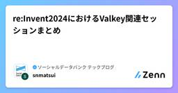
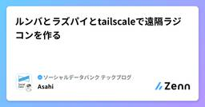
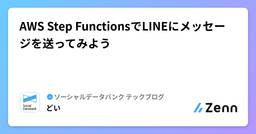
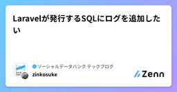
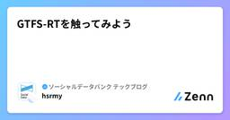
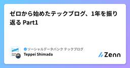

ソーシャルデータバンク テックブログのフィード
https://zenn.dev/p/sdb_blog
ソーシャルデータバンク株式会社の開発チームです。インフラ、品質、UI/UX、DevOpsなど様々な活動に取り組んでいます。
フィード

re:Invent2024におけるValkey関連セッションまとめ
ソーシャルデータバンク テックブログのフィード
Social Databank Advent Calendar 2024 の20日目です。AWS re:Invent 2024 における、Valkey 関連のセッションのまとめです。 Valkeyとは?2024年3月のRedisのライセンス変更 によって Redisからフォークされたプロジェクト で、Redisに携わったメンテナーやコミュニティによって引き続きオープンソースとして提供されており、パフォーマンスや効率性がより高まっているとされています。 AWS(ElastiCache)におけるValkey先述のRedisのライセンス変更が背景にと考えられますが、2024年1...
3時間前
〜Flexbox怖くない〜
ソーシャルデータバンク テックブログのフィード
Social Databank Advent Calendar 2024 の19日目です！突然ですが、みなさん、フロントを作る際に、このような悩みをもったことはないですか？「このフォームとボタンを綺麗に横に並べたいだけなのに、、なぜだか上手くいかない！もうわけがわからんっ！！」そんな時に便利なものがあります！✨Flexbox✨Flexboxとは、正式名称はFlexible Box Layout Moduleといい、複雑なレイアウトも、簡単に作ることができるCSSのレイアウト手法です！細かい所の自動調整もしてくれて、とっても便利！これが分かれば、フロント作りがかなり...
1日前
初心者向け：Vueのcomputedとmethodsの使い分け
ソーシャルデータバンク テックブログのフィード
はじめにSocial Databank Advent Calendar 2024 の19日目です！こんにちは！ITベンチャー企業で半年間働いている駆け出しエンジニアです👨💻今回はVue.jsを使用した開発に着手する際この処理computedとmethodsどっちで書けばいいんだろうな〜🐹となることがあったため個人的な判断基準をまとめてみました！ computedとは渡すデータの変更を見張って、変更されたときに動く関数値はキャッシュされる methodsとは基本的に使用する関数使い勝手がいいけど何度も呼び出すと負荷がかかる 結局いつcompute...
1日前

ルンバとラズパイとtailscaleで遠隔ラジコンを作る
ソーシャルデータバンク テックブログのフィード
Social Databank Advent Calendar 2024 の18日目です。こんにちは！ラズパイ初心者です今回はルンバを改造して社員のリモートワークを快適にしたかった話をします！ できたものブラウザからボタンをぽちぽちすると動くよ〜通話もできるよ〜 構成 材料ルンバ 690シリーズ x 1RaspberryPi 4B x 1個魚眼カメラ x 1スピーカーフォン x 1ジャンパーワイヤ x 3モバイルバッテリー x 1三脚 x 1 詳解詳解と書きましたがそんなに詳しく書かないです（長くなるので） 1.ラズパイ→ルンバ実はル...
2日前

AWS Step FunctionsでLINEにメッセージを送ってみよう
ソーシャルデータバンク テックブログのフィード
Social Databank Advent Calendar 2024 の17日目です。 はじめにSDBのどいです！AWS Step Functionsはコードを書かずに、様々なAWSサービスを連携してワークフローを実行できる便利なサービスです。この記事では、AWS Step Functions の Call HTTP APIsアクションを使ってLINE公式アカウントから友だちにメッセージを送信する方法を紹介していきます。Lambdaでコードを書かずにAWSで構築するためにはどうすればよいかと考え、今回はStep Functionsを採用して構築してみました。 Ste...
3日前
ステータスコード全然わからない
ソーシャルデータバンク テックブログのフィード
Social Databank Advent Calendar 2024 の 16 日目です。 こんにちはステータスコード使いこなしてますか？200,201,202,204のステータスコードの違いを空で言えますか？言えたらすごいです！私はステータスコードが何使って良いのかわからない勢なので、覚えておくと自慢できそうなステータスコードをまとめます!?RFC9110をチラ見しながら作成していきます。 早見表ステータスコード名前説明200OKリクエスト成功201Createdリクエストの成功して1個以上のリソースが作られた。（Postメソッ...
4日前

Laravelが発行するSQLにログを追加したい 1
1
ソーシャルデータバンク テックブログのフィード
Social Databank Advent Calendar 2024 の15日目です。こんにちは、zinです🦑弊社サービスの Liny では、調査用にAurora (MySQL)の監査ログやスロークエリログを取得しています。Linyではおよそ100のECS Serviceが存在しており、500以上のコンテナが稼働しています。メインで稼働しているAuroraはほぼ全てのコンテナから接続されており、「監査ログ取ったは良いけど、このクエリ誰が叩いたの？」状態でした。解決策として、SQLにコンテナの情報をコメントとして付与することにしました。 サンプルプロジェクトを作成クエリ...
5日前

GTFS-RTを触ってみよう
ソーシャルデータバンク テックブログのフィード
この記事は Social Databank Advent Calendar 2024 の 14 日目の記事です。 はじめに皆さんは GTFS と GTFS-RT というものをご存知でしょうか？ GTFSGTFS は General Transit Feed Specification の略で公共交通機関の時刻表と地理的情報に関するオープンフォーマットです。公共交通機関のルートや停車時刻等の情報をそれぞれ CSV ファイルに記述し、CSV ファイルを 1 つの ZIP ファイルにまとめたものになります。GTFS は GTFS-static と呼ばれることもあります。 G...
6日前

ゼロから始めたテックブログ、1年を振り返る Part1
ソーシャルデータバンク テックブログのフィード
!技術広報 Advent Calendar 2024Social Databank Advent Calendar 2024の13日目です。 はじめに弊社では2023年9月にテックブログを立ち上げました。1年経ったので振り返りを残そうと思います。 想定読者これから社内でテックブログを開設しようと考えている人テックブログを立ち上げたものの、過疎ってて困っている人 ここで話すことゼロから始めたテックブログが、どのように社内に浸透していったか現在どうなっているか ここでは話さないことPageView数やLike数の伸ばし方（KPIに設定していないた...
7日前
「これ、何のためにやってるんだっけ？」 1
ソーシャルデータバンク テックブログのフィード
Social Databank Advent Calendar 2024 の 13 日目です。 これ、何のためにやってるんだっけ？仕事や日常の中でふと、「これ、何のためにやってるんだっけ？」と思うことってありませんか？（私はよくあります）私はチームリーダーとしても、エンジニアとしても、そして一人の人間としても、よく「Why（なぜ）」を考えています。Why を考えることで、単なる作業や出来事が「目的」を持つ行動に変わります。これがあるだけで、タスクの進め方や判断基準が明確になるし、時には新しい発見に繋がることもあります。ということで、今回は Why を考えると世界がちょっとクリ...
7日前

【playwright】PageObjectModelという実装パターン
ソーシャルデータバンク テックブログのフィード
Social Databank Advent Calendar 2024 の 11 日目です。前回の記事https://zenn.dev/sdb_blog/articles/test-blog-kyoya-004 🙃はじめに!playwrightのPageObjectModelについて考える皆さんおはこんばんにちは！（死語充実したplaywright人生歩んでいますか！？今回はplaywrightの実装パターンであるPageObjectModel についてお話ししていこうと思います！ 🗒️Page Object Modelって？皆さんはPageObjectMod...
8日前
【AWS】CloudFront + S3 でお手軽HP公開術
ソーシャルデータバンク テックブログのフィード
Social Databank Advent Calendar 2024 の11日目です。こんにちは 😃 tatata-keshiです ❗AWS CloudFront + S3 を用いることで、静的なウェブサイトを簡単に公開できます。今回はその方法について紹介します。 構成図構成図は以下の通りです。 公開するページ今回は、こちらのindex.htmlを公開します。index.html<!DOCTYPE html><html lang="ja"><head> <meta charset="UTF-8"> ...
9日前
持病持ちがAWS re:Invent 2024 に参加してきました
ソーシャルデータバンク テックブログのフィード
Social Databank Advent Calendar 2024 の10日目です。こんにちは、zinです🦑ラスベガスで開催されたAWS re:Inventに参加してきました！初海外、初re:Inventということで、参加してわかった注意点を書き残しておこうと思います。※ この記事には技術的な内容は含みません私は健康面で色々不安があったのですが、喘息視点でのラスベガス情報があまりなかったので対策不足を感じました。以下私のスペックです。喘息持ち (レルベア必須)喉が弱い (1年のうち半分くらいは喉痛い、慢性咽頭炎という謎の病)肌が弱い (子供の頃アトピーだった、今で...
10日前
[懺悔・反省] Zennの公開日時をミスってやらかした話
ソーシャルデータバンク テックブログのフィード
!はじめてのアドベントカレンダー Advent Calendar 2024Social Databank Advent Calendar 2024の 9 日目です。 はじめにZenn と GitHub を連携して記事を管理していますが、公開日時の設定ミスで盛大にやらかしました 💦気づけば多方面に迷惑をかける事態に…。反省を込めて、この失敗の全貌と解決方法を綴ります。大前提 Zenn と GitHub の連携Zenn では、GitHub リポジトリ上の Markdown ファイルを管理し、記事として公開できます。例えば今回の記事だと以下のように設定しています。（p...
11日前
えっ！デザインって下ごしらえするとこんなに楽できるの！？
ソーシャルデータバンク テックブログのフィード
イントロ皆さんこんにちは。デザインチームの和田です。アプリでもサービスでもいい感じのデザインにしていくって、とても難しいですよね。いろんな人の意見を取り入れたら迷走したり、修正加えたら前の方が良かったと言われたり...デザインは料理と一緒で「事前の下ごしらえ」を挟むだけで作成・修正スピードが大幅にアップする話をしたいと思います。今回は以下の架空のモバイル求人サイトのデザインを修正していきながら解説していきたいと思います。 下ごしらえ3ステップ修正していくにあたり、「色がない」「配置を直さなきゃ」など、いろんな改善点が頭に思い浮かぶと思いますが、慌てて修正に走ってはい...
12日前
振り返りの手法について調べてみた
ソーシャルデータバンク テックブログのフィード
はじめにSocial Databank Advent Calendar 2024 の7日目です。今回は振り返りの手法についていろいろ調べて見ましたので、それを記載したいと思います。まず、振り返り手法について調べようと思ったきっかけが、振り返りについて以下の課題感を持っていたからです。KPTを用いて振り返りを行っているが、毎回同じことをしているので形骸化していると感じる振り返りのアクションがなかなか出てこないアクションの担当者が毎回特定の人になりやすいアクションをやりたいという人が少ないこれらの課題の対策として、そもそも振り返りのやり方と変えれば、新鮮な気持ちにな...
13日前
鍵管理もSSMもいらない！？EC2 Instance Connect EndpointでローカルからRDSに接続する方法
ソーシャルデータバンク テックブログのフィード
Social Databank Advent Calendar 2024 の6日目です。 はじめにこんにちは😃 普段趣味でAWSを使用している学生です！！最近、RDSへの踏み台EC2をどこに建て、どのようにローカル接続するか迷っていました。まずは代表的な方法を調べてみました！SSHEC2にパブリックIPの割り当てが必要使用者ごとに秘密鍵の自己管理および公開鍵の登録が必要EC2がパブリックサブネットにあるためセキュリティグループによるIP制限が必要SSM Session ManagerプライベートなEC2に接続するためにはNATゲートウェイまたはVPCエンドポイ...
14日前
FormRequestでのユニーク制約に潜む落とし穴！Laravelで学ぶ責務分離を考慮したDBアクセス
ソーシャルデータバンク テックブログのフィード
!Laravel Advent Calendar 2024Social Databank Advent Calendar 2024の 5 日目です。 はじめにLaravel の FormRequest は、データのバリデーションを簡潔に実装できる便利な機能です。しかし、ユニーク制約のように データベース（DB） アクセスが必要なバリデーションでは、適切な層で処理を行わないと、システム設計に悪影響を与える可能性があります。本記事では、Laravel におけるユニーク制約を例に挙げ、設計思想を考慮した適切なデータ操作のアプローチについて解説します。 具体例例えば、use...
15日前
【Laravel11.x】ReverbでPusherを使わずにリアルタイム通信✨
ソーシャルデータバンク テックブログのフィード
!Laravel Advent Calendar 2024Social Databank Advent Calendar 2024 の4日目です。 はじめに初めまして、ソーシャルデータバンク株式会社でインターンとして働いているkanoooです。最新のLaravel11がリリースされてから８ヶ月以上経ちましたが、今回はLaravel11からの新機能「Reverb」について解説したいと思います。 Reverbとは今までLaravelでリアルタイム通信（リロード不要のチャットなど）を実装したい時はLaravel単独では実現できず、PusherといったWebSocketサー...
16日前
Pinia開発者の議論から学ぶ、良いコードを書くための4つのルール🍍
ソーシャルデータバンク テックブログのフィード
この記事では、PiniaのEslintに関するissueやDiscussionでの議論を通じて、どのように書き方を改善できるかを考えていきます！こんにちはmocchantaiです。Piniaは使ってないけど、Piniaが可愛いので布教したいと思っています。先日Piniaについて以下の記事を書きました。https://zenn.dev/sdb_blog/articles/006-pinia-tutorial今回参考にしたGithubのissueとdiscussionは以下の２つです。これらの内容を元に、読みやすく加工してみました。この記事をきっかけに、vuejs, pinia...
17日前